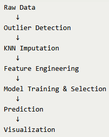
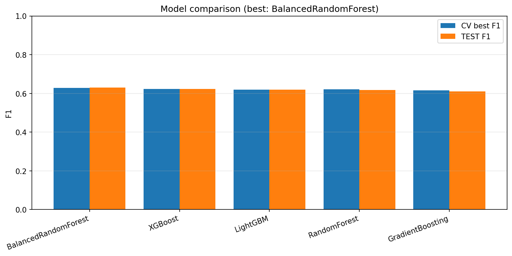
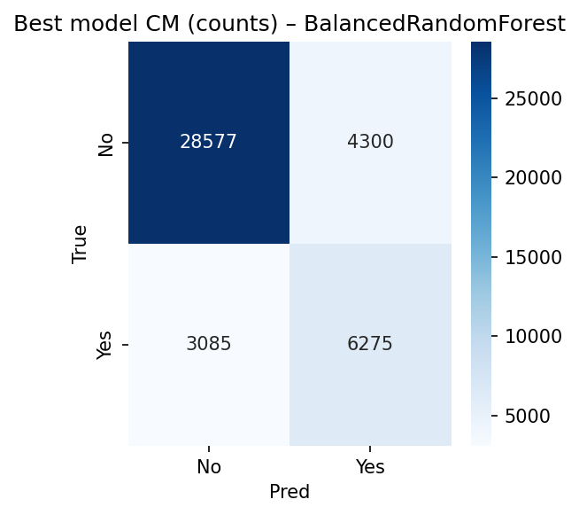
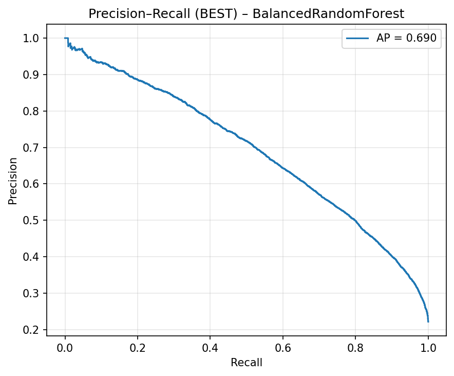
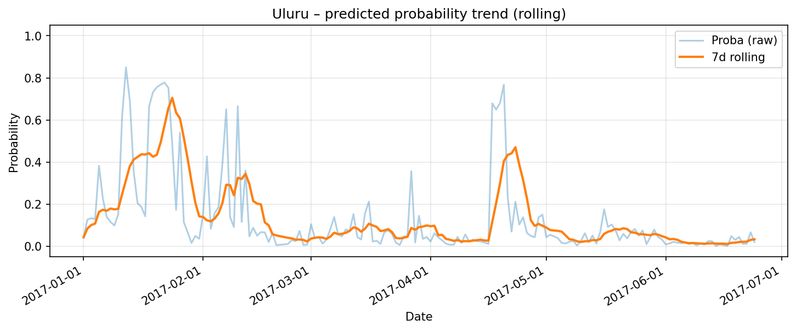
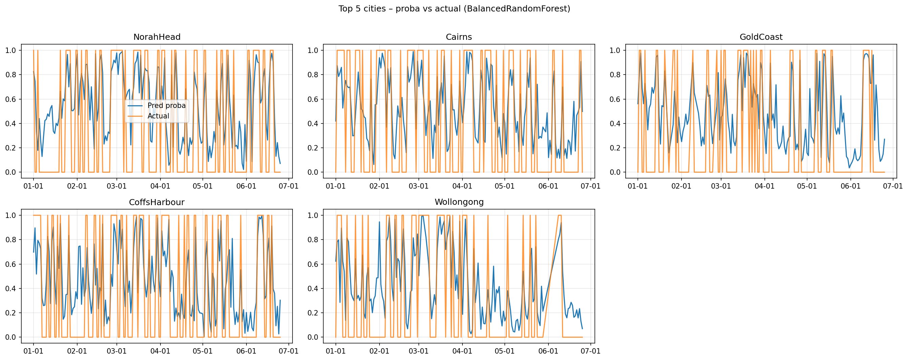

Rain Prediction with Machine Learning
End-to-end ML pipeline for predicting next-day rainfall using Australian weather data.
Overview
This project demonstrates a fully automated machine learning pipeline built to predict whether it will rain the next day. The workflow loads raw weather observations, handles noisy and incomplete data, creates engineered features, compares multiple models, and generates probabilistic rainfall predictions.
The focus was not only on building a predictive model, but on designing a reproducible and interpretable ML workflow that reflects real-world data challenges such as missing values, outliers, and class imbalance.
Problem & Dataset
The project is based on the Australian Weather dataset, which contains daily weather observations from multiple cities across Australia. The task is a binary classification problem where the target variable is RainTomorrow.
Classification Target
RainTomorrow = 1 → Rain
RainTomorrow = 0 → No rain
Input Variables
- Temperature
- Humidity
- Wind speed and direction
- Atmospheric pressure
- Rainfall and cloud coverage
Real-World Challenges
- Missing values
- Measurement noise
- Class imbalance
Pipeline Architecture
The solution is built as a modular machine learning pipeline, where each processing step is handled by a dedicated script. This makes the workflow easier to maintain, reproduce, and automate.
Raw Data → Outlier Detection → KNN Imputation → Feature Engineering → Model Training & Selection → Prediction → Visualization

pipeline overview diagram
Feature Engineering
A key part of the project was transforming raw weather measurements into more informative predictors. The goal was to capture temporal patterns and interactions that are not directly visible in the original columns.
TempRangeDiff
Difference between daily maximum and minimum temperature.
HumidityRainIndex
Captures the interaction between humidity and rainfall.
WindHumidityIndex
Represents the joint effect of wind speed and humidity.
RainCloudPressureMix
Combined indicator using rainfall, cloud coverage, and pressure change.
Rainfall_last_7days
Rolling average used to capture short-term rainfall history.
Rainfall_last_30days
Longer rolling trend showing extended rainfall patterns.
Model Training & Selection
Several machine learning models were trained and compared in order to identify the most effective classifier for this task. Hyperparameters were optimized with GridSearchCV using stratified cross-validation.
Compared Models
- Random Forest
- Balanced Random Forest
- Gradient Boosting
- XGBoost
- LightGBM
Evaluation Metrics
- F1 Score
- Accuracy
- ROC AUC
- Precision-Recall metrics
Selection Logic
The final model was selected based on the best test F1 score, which is especially useful for imbalanced classification problems.

Model F1 Score ComparisonBest Model Performance
The selected model achieved strong performance on the holdout test set and was further evaluated through diagnostic plots.
- Accuracy: 0.89
- F1 Score: 0.91
- ROC AUC: 0.87

Confusion MatrixThe confusion matrix highlights how well the model separates rainy and non-rainy days.

Precision-Recall curveBecause rainfall events are less frequent, the Precision-Recall curve provides a more informative view of performance than accuracy alone.
Prediction Visualizations
In addition to numerical evaluation, the project focuses on making predictions interpretable. The model outputs a probability between 0 and 1, representing the predicted likelihood of rain.
Probability Trends Over Time

Uluru Rainfall Probability TrendsThis view shows how rainfall probability changes over time and helps identify periods with elevated risk.
Top Cities Visualization

Small Multiples Chart for Top 5 CitiesSmall multiple charts make it easier to compare prediction behavior across multiple locations.
Key Takeaways
- Data preprocessing significantly improved model stability. Handling outliers and missing values was critical.
- Feature engineering had a strong impact on performance. Interaction features and rolling rainfall statistics were especially useful.
- F1 score and Precision-Recall metrics were more informative than accuracy for this imbalanced rainfall prediction task.
- The project demonstrates a reproducible end-to-end ML workflow, not just a single trained model.
GitHub Repository
The full source code and pipeline implementation are available on GitHub.